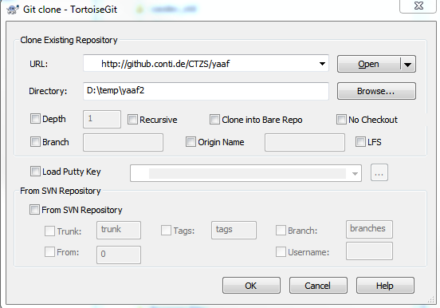

Mo 23.04.2018 12:55 Einführung YAAF von Daniel: http://github.conti.de/CTZS/yaaf/wiki
1) Installation
Mit Git Bash: $ git clone git@github.conti.de:CTZS/yaaf.git in den Ordner D:\YAAF installiert
Di 15.05.2018 16:14
funktioniert nicht mehr, aber mit TortoiseGit -> Clone ging es:

2) Command-File erstellt:
D:\YAAF\runGenerateYaafMotionReq.cmd
cd yaaf
python generate_frame.py D:/GitGrid/Grid_trunk/src/MotionReq/description.yaaf --grid_path D:/GitGrid/Grid_trunk
cd ..
Damit wird die Solution erstellt